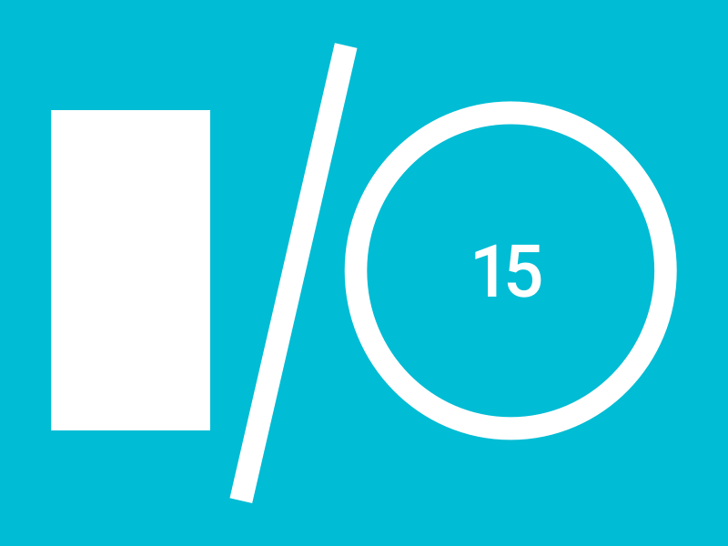

Evento
O Google I/O é uma conferência de programadores que é organizada anualmente pela Google em São Francisco, Califórnia, Estados Unidos. O objetivo dessa conferência é orientar os programadores a melhorar seus programas com técnicas que a Google demonstra. Nessa conferência a Google também anuncia novos produtos e novas versões do sistema operacional Android.
Google I/O Extended, evento que, como o nome já diz, serve como uma extensão local do acontecimento global. Junto com a apresentação feita pela empresa a todo o mundo e transmitida pela internet, os participantes poderão contar com palestras de especialistas em temas como webdesign, desenvolvimento de aplicativos, indexação e outros produtos e ferramentas da empresa.
Uma das grandes expectativas para o Google I/O 2015 é a apresentação do novo Nexus, o aparelho do Google com Android puro que, de acordo com os rumores, está sendo fabricado pela Huawei. Além disso, sempre é possível que a gente veja novidades sobre o Project Ara, o celular modular da empresa, e o Tango, seu tablet com realidade aumentada e um grande foco nas tecnologias vestíveis, com destaque para os relógios. Além disso, também pode ocorrer uma aparição do Glass em nova forma.
Local
Av. Colares Moreira, 443 - Renascença II, São Luís - MA. São Luís, MA
Palestras
-
08h30 JavaScript, um mundo além do browser.
Fábio Assunção @fabiioassuncao
Front / back-end web developer at VAT S/A. Graduando em Engenharia da Computação, pai do Gabriel, freelancer em tempo parcial e eterno aprendiz.
-

09h30 Fundamentos da Web
Hélio de Oliveira helio.me
Apaixonado por web desde a infância, tenho toda minha carreira profissional voltada para a internet. Bacharel em Administração de empresas e especializado em Gestão de TI. Trabalho principalmente na startup bookcasting.com, e em projetos próprios como o encomende.com além de participar de comunidades locais sobre PHP, web e TI em geral.
-
10h30 Acessibilidade na WEB: internet para todos
Willian Mano @willian_dev
Graduando em engenharia da computação pela UEMA, Willian trabalha atualmente como Assessor da transparência na Secretaria de Estado de Transparência e Controle e supervisor de desenvolvimento da UemaNet/UEMA. Desde 2007 atua no mercado desenvolvimento soluções de software, com foco principal em soluções WEB. É membro ativo do PHP Maranhão e demais grupos de usuários do estado. Suas principais áreas de interesse são: Webservices, Gameficação, Ambientes virtuais de aprendizagem e interoperabilidade de sistemas.
-

13h30 Keynote Oficial Google I/O
Programação
| Time | Slot | Description |
|---|---|---|
| 8h00 | Check-in / Breakfast (não perca) | - |
| 08h30 | JavaScript, um mundo além do browser. VAT | Quando alguém te fala em JavaScript o que lhe vem a mente? Manipular o DOM? Esqueça isso, você pode fazer muito mais com o JavaScript. Com ele você pode além de desenvolver complexas aplicações web, também fazer grandes apps para dispositivos móveis, desktop, servidor e até desenvolver para Arduíno, Raspberry e mais uma infinidade de possibilidades. |
| 09h30 |
Fundamentos da Web
9D studio
|
Com a ascensão da comunidade open-source, as novidades para desenvolvedores web crescem de forma vertiginosa. Para ajudar, a Google criou um grande manual de boas práticas no design, performance, experiência do usuário, melhores ferramentas e outros. Vamos discutir os aspectos mais importantes de cada categoria. |
| 10h30 | Acessibilidade na WEB: internet para todos UemaNet / UEMA | Nesta apresentação vamos aprender como tornar um site ou aplicação acessível para pessoas que possuem algum tipo de deficiência, seja ela visual, motora ou mesmo para pessoas sem deficiências. |
| 11h40 | Almoço | - |
| 13h30 | Keynote Oficial Google I/O Google | Apresentação do keynote oficial direto do evento Google I/O São Francisco. |
| 16h00 | Coffee-break | - |
| 16h30 | Painel de debate sobre as novas tecnologias. | - |
| 17h30 | Sorteios e Encerramento. | - |
Patrocinadores
Parceiros

Contato
Em caso de dúvidas entre em contato pelas redes sociais Google+ / Facebook ou pelo e-mail gdgsaoluis@gmail.com.